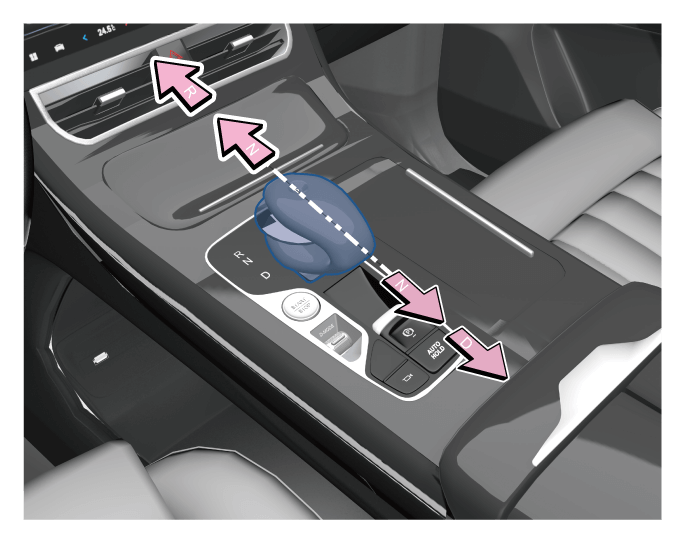
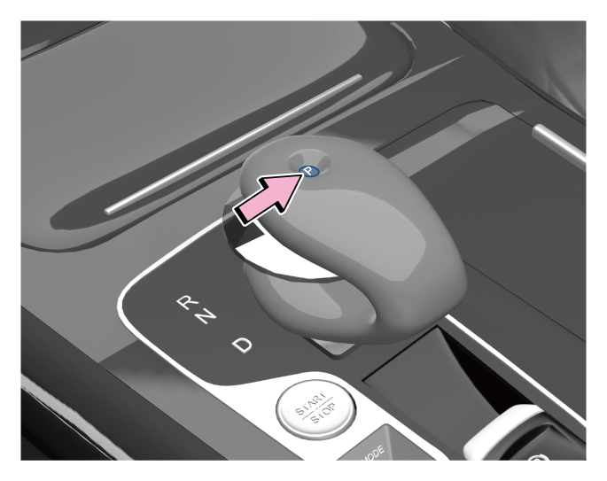

换挡杆挡位有“P、R、N、D”，整车电源在“ON”挡时，切换挡位后，组合仪表显示相应的挡位信息。
6.1.4 挡位说明

–将换挡杆向前推动，从“D”挡进入“R”挡，会有两个阻力点，达到第一个阻力点为“N”挡位置，到达第二个阻力点为“R”挡位置。
–将换挡杆向后推动，从“R”挡进入“D”挡，会有两个阻力点，达到第一个阻力点为“N”挡位置，到达第二个阻力点为“D”挡位置。
警告+
车辆完全静止时，才能切换到“R”或“P”挡位，否则会损坏变速器。
P：驻车挡

–车辆完全停下来后，按下此挡位，实现驻车。
–长时间停车时，需踩下制动踏板，将换挡杆切换到“N”挡位，拉起“EPB”电子驻车按键，松开制动踏板，然后按下“P”按键。
提示+
–仪表处有当前挡位显示信息，请注意查看。
–当车辆未启动时，操作换挡杆将无法进入所需前进挡“D”挡和倒车挡“R”挡。
–当换挡系统故障而挡位无法切换出“P”挡时，请联系广汽传祺特约店进行检修。
R：倒车挡
–倒车时切换此挡位。
–使车辆完全静止，挡位处于“P”或“N”或“D”挡时，踩下制动踏板，将换挡杆向前推动切换至“R”挡。
N：空挡
–挡位处于“P”挡时，踩制动踏板，换挡杆向前推至第一个阻力位置，挡位将切换至“N”挡。
–挡位处于“D”挡时，踩制动踏板，换挡杆向前推至第一个阻力点位置，挡位将切换至“N”挡。
–挡位处于“R”挡时，踩制动踏板，换挡杆向后推动至第一个阻力点位置，挡位将切换至“N”挡。
警告+
如果换挡杆置于N挡，即使发动机运转动力电池也不充电。因此，若换挡杆置于N挡一段时间，动力电池电量将耗尽，导致车辆无法启动。
D：前进挡
–正常行驶切换此挡位。
–踩下制动踏板，将换挡杆向后拉动，可从“P”、“N”、“R”挡位挂入“D”挡。
驾驶模式
–ECO(节能)模式：此模式下动力稍有迟滞，油耗比较经济。
–COMFORT(舒适)模式：此模式下动力响应、油耗比较均衡。
–SPORT(运动)模式：此模式下动力响应迅速，油耗较高。
驾驶模式选择

1.整车电源置于“ON”挡位，通过上/下拨动驾驶模式（D-MODE）拨钮，可以在“节能模式→舒适模式→运动模式→节能模式......”之间循环切换目标驾驶模式。

2.整车电源置于“ON”挡位，通过音响系统底部工具栏驾控面板键 ，选择切换驾驶模式。
，选择切换驾驶模式。
提示+
点击音响系统界面返回键或停留约数秒无操作，隐藏模式弹窗。

3.整车电源置于“ON”挡位，通过音响系统应用菜单“驾驶模式”，选择切换驾驶模式。
当前模式设定

-方法一：通过音响系统应用菜单“驾驶模式→当前模式设定”，设置当前驾驶模式参数。
-方法二：通过拨动驾驶模式（D-MODE）拨钮，音响系统弹出“驾驶模式”界面，点击“当前模式设定”，设置当前驾驶模式参数。
提示+
–每个驾驶模式内容都有重置键可以一键恢复该模式厂家初始设定
–若要记忆当前驾驶模式，需通过音响系统“设置→底盘和动力→记忆当前驾驶模式”设置开启，下次启动车辆默认当前驾驶模式。
— 页面到底了 —